Code
import numpy as npBasic python plotting
To study and implement basic numerical computation, symbolic mathematics and graphical visualization using Python libraries such as NumPy, SymPy and Matplotlib.
NumPy (Numerical Python) is the foundational library for scientific computing in Python. It provides support for large, multi-dimensional arrays and matrices, along with a collection of mathematical functions to operate on these arrays efficiently. In this section, basic mathematical operations are transleted to python. For this simulation examples Numpy library will be used.
import numpy as npIn-order to handle exceptions on division operation, usually python make even zero output to a very small positive number.
NumPy allows us to perform element-wise mathematical operations on arrays without using loops. >Simulating a basic mathematics functions, \(y=f(x)\) in data driven approach
# Sine function
angles = np.array([0, np.pi/2, np.pi])
sin_values = np.sin(angles)
print("Sine Values:", sin_values)
# Exponential function
a=np.array([1,2,3])
exp_values = np.exp(a)
print("Exponential Values:", exp_values)
# Square root function
sqrt_values = np.sqrt(a)
print("Square Root Values:", sqrt_values)Sine Values: [0.0000000e+00 1.0000000e+00 1.2246468e-16]
Exponential Values: [ 2.71828183 7.3890561 20.08553692]
Square Root Values: [1. 1.41421356 1.73205081]Understanding how to structure data is crucial. We can reshape arrays to change their dimensions or access specific elements using indexing and slicing.
# Reshaping a 1D array to 2D
reshaped_array = np.arange(6).reshape((2, 3))
print("Reshaped Array:\n", reshaped_array)
# Indexing and Slicing
array = np.array([1, 2, 3, 4, 5])
# Accessing an element
print("Element at index 2:", array[2])
# Slicing (elements from index 1 up to, but not including, 4)
print("Elements from index 1 to 3:", array[1:4])
# Fancy indexing (accessing specific non-consecutive indices)
indices = [0, 2, 4]
print("Elements at indices 0, 2, 4:", array[indices])Reshaped Array:
[[0 1 2]
[3 4 5]]
Element at index 2: 3
Elements from index 1 to 3: [2 3 4]
Elements at indices 0, 2, 4: [1 3 5]These functions allow us to summarize data by computing statistics like sums, means, or finding extreme values.
# Sum of elements
sum_value = np.sum(array)
print("Sum:", sum_value)
# Mean of elements
mean_value = np.mean(array)
print("Mean:", mean_value)
# Maximum and Minimum values
print("Max:", np.max(array))
print("Min:", np.min(array))Sum: 15
Mean: 3.0
Max: 5
Min: 1Broadcasting is a powerful mechanism that allows NumPy to work with arrays of different shapes during arithmetic operations. It automatically “stretches” the smaller array to match the larger one.
# Broadcasting a scalar value
scalar = 5
broadcasted_sum = array + scalar
print("Array + Scalar:\n", broadcasted_sum)
# Broadcasting with different shapes
array_2d = np.array([[1, 2, 3], [4, 5, 6]])
array_1d = np.array([1, 2, 3])
broadcasted_sum_2d = array_2d + array_1d
print("2D Array + 1D Array:\n", broadcasted_sum_2d)Array + Scalar:
[ 6 7 8 9 10]
2D Array + 1D Array:
[[2 4 6]
[5 7 9]]Unlike NumPy, which computes numerical approximations, SymPy is used for symbolic mathematics. It handles algebra, calculus, and equation solving exactly, much like we would on paper.
We start by defining symbolic variables and manipulating algebraic expressions.
import sympy as sp
# Define symbols
x, y = sp.symbols('x y')
# Define an expression
expr = x**2 + 2*x + 1
# Simplify the expression
simplified_expr = sp.simplify(expr)
print(f"Simplified expression: {simplified_expr}")
# Expand the expression
expanded_expr = sp.expand((x + 1)**2)
print(f"Expanded expression: {expanded_expr}")Simplified expression: x**2 + 2*x + 1
Expanded expression: x**2 + 2*x + 1SymPy can find exact roots of algebraic equations.
# Define equation: x^2 - 4 = 0
eq = sp.Eq(x**2 - 4, 0)
# Solve for x
solutions = sp.solve(eq, x)
print(f"Solutions: {solutions}")Solutions: [-2, 2]SymPy excels at performing derivatives and integrals symbolically.
# Define a function
f = sp.sin(x) * sp.exp(x)
# Differentiate the function
f_prime = sp.diff(f, x)
print(f"Derivative: {f_prime}")
# Integrate the function
integral = sp.integrate(f, x)
print(f"Integral: {integral}")Derivative: exp(x)*sin(x) + exp(x)*cos(x)
Integral: exp(x)*sin(x)/2 - exp(x)*cos(x)/2We can also compute limits and Taylor series expansions, which are essential for approximation theory.
# Limit of sin(x)/x as x approaches 0
f_limit = sp.sin(x) / x
limit_val = sp.limit(f_limit, x, 0)
print(f"Limit: {limit_val}")
# Series expansion of e^x around x=0
f_exp = sp.exp(x)
series_f = sp.series(f_exp, x, 0, 6)
print(f"Series expansion: {series_f}")Limit: 1
Series expansion: 1 + x + x**2/2 + x**3/6 + x**4/24 + x**5/120 + O(x**6)MatplotlibMatplotlib is the standard library for creating static, animated, and interactive visualizations in Python.
Line plots are used for continuous data, while scatter plots are best for discrete data points.
import matplotlib.pyplot as plt
# Data
x = [1, 2, 3, 4, 5]
y = [2, 3, 5, 7, 11]
# Basic Line Plot
plt.plot(x, y)
plt.xlabel('x-axis')
plt.ylabel('y-axis')
plt.title('Basic Line Plot')
plt.show()
# Basic Scatter Plot
plt.scatter(x, y)
plt.xlabel('x-axis')
plt.ylabel('y-axis')
plt.title('Basic Scatter Plot')
plt.show()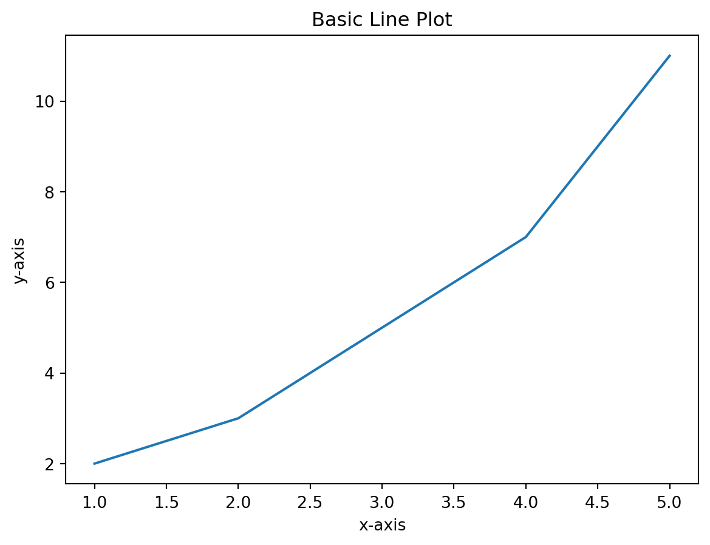
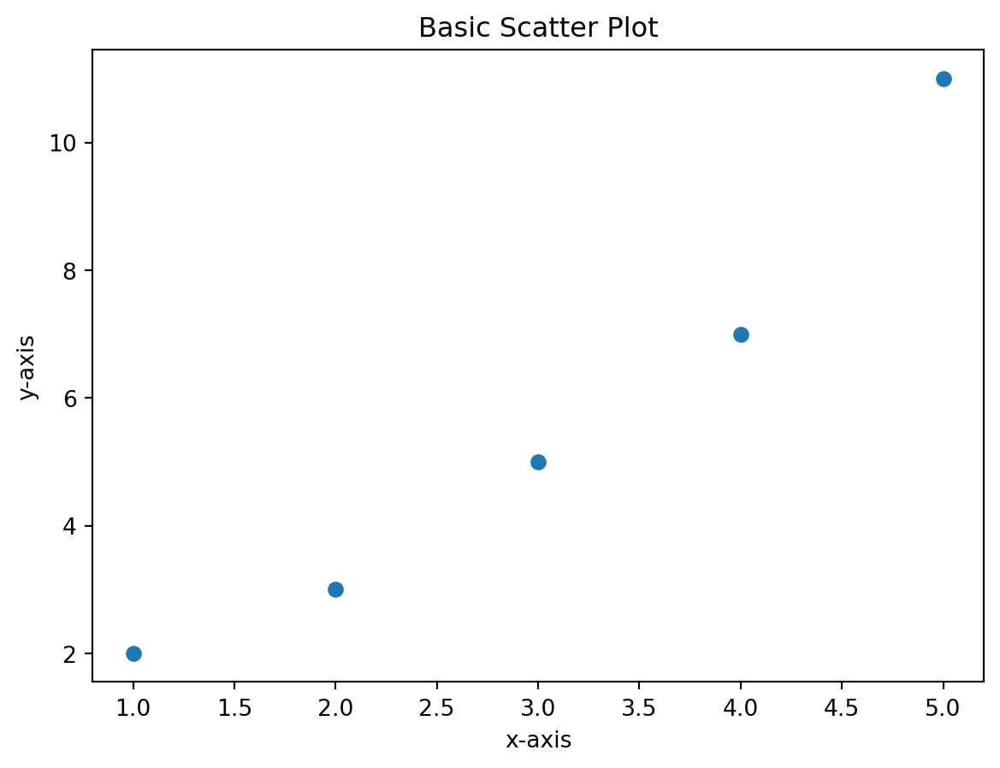
Bar charts compare categories, while histograms show the frequency distribution of continuous data.
# Bar Plot
categories = ['A', 'B', 'C', 'D']
values = [4, 7, 1, 8]
plt.bar(categories, values)
plt.title('Basic Bar Plot')
plt.show()
# Histogram
data = np.random.randn(1000)
plt.hist(data, bins=30, edgecolor="black")
plt.title('Basic Histogram')
plt.show()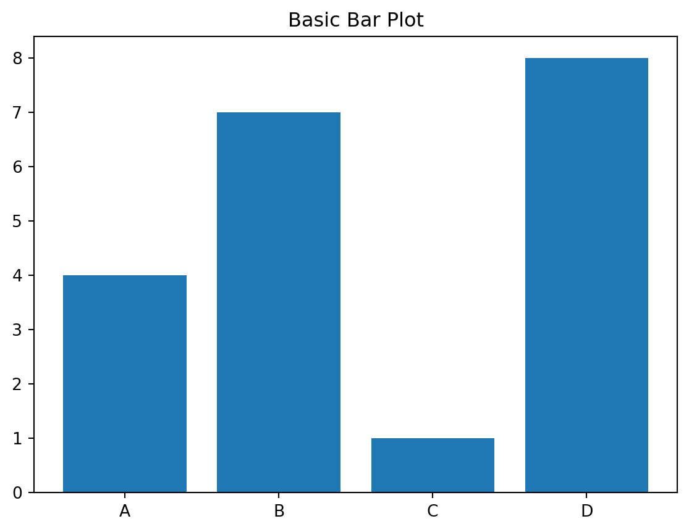
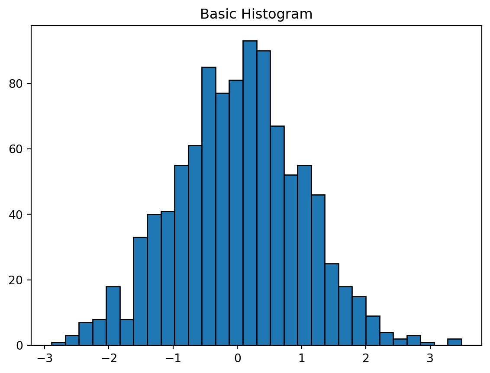
Pie charts visualize proportions. You can also heavily customize plots (colors, line styles, markers) to improve readability.
# Pie Chart
labels = ['A', 'B', 'C', 'D']
sizes = [15, 30, 45, 10]
explode = (0.1, 0, 0, 0) # explode 1st slice
plt.pie(sizes, explode=explode, labels=labels, autopct='%1.1f%%', shadow=True)
plt.title('Basic Pie Chart')
plt.show()
# Customized Line Plot
plt.plot(x, y, color='green', marker='o', linestyle='dashed', linewidth=2, markersize=12)
plt.title('Customized Line Plot')
plt.show()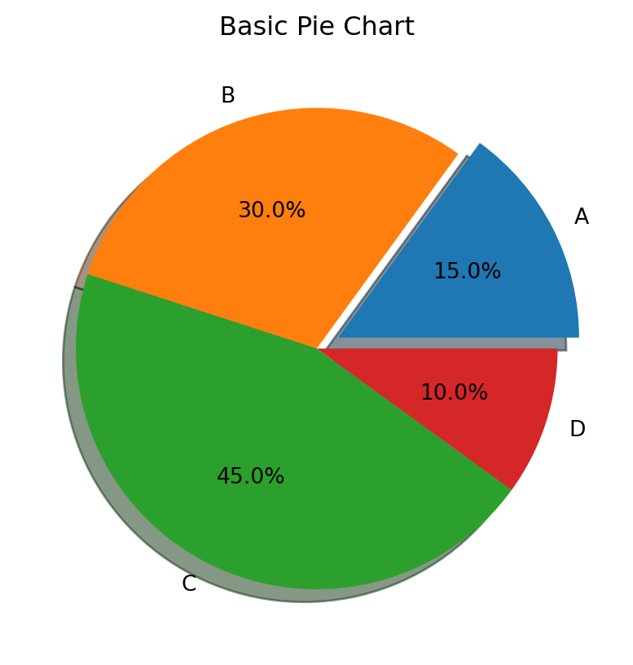
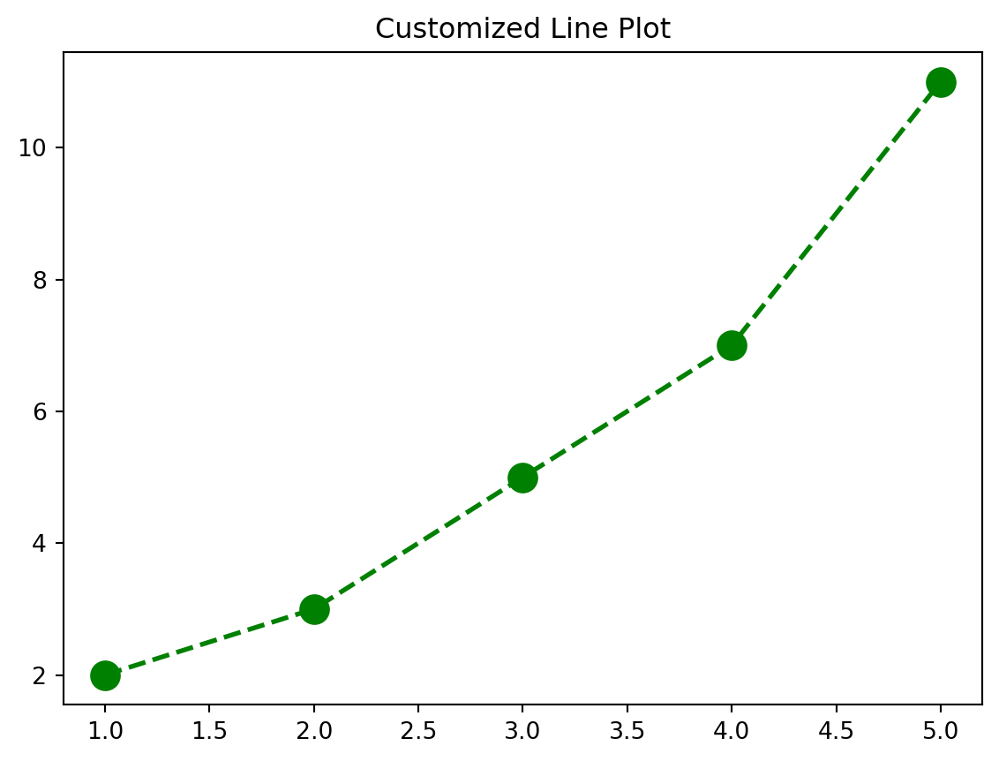
## visualization as intersection of line joining
import matplotlib.pyplot as plt
x = np.arange(-10, 10)
y = 2*x
y1 = -x + 3
plt.figure()
plt.plot(x, y)
plt.plot(x, y1)
plt.xlim(0, 3)
plt.ylim(0, 3)
# draw axes
plt.axvline(x=0, color='grey')
plt.axhline(y=0, color='grey')
plt.plot([1,1],[0,2], 'g--')
plt.plot([1,0],[2,2], 'g--')
plt.show()
plt.close()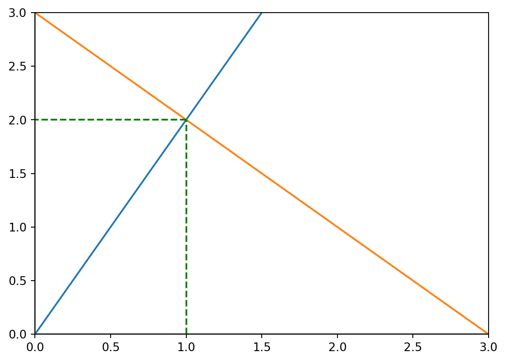
Plotting a matrix as an image This is a matrix which is an image. Here each square corresponds to one item in the matrix, and color of each square corresponds to the value of element in the matrix.
I=np.matrix([[1,1,1,1],[0,0,0,1],[0,0,1,0],[0,1,0,0],[1,0,0,0]])
print(I)
plt.imshow(I,cmap='gray', vmin = 0, vmax = 1,interpolation='none')
plt.show()[[1 1 1 1]
[0 0 0 1]
[0 0 1 0]
[0 1 0 0]
[1 0 0 0]]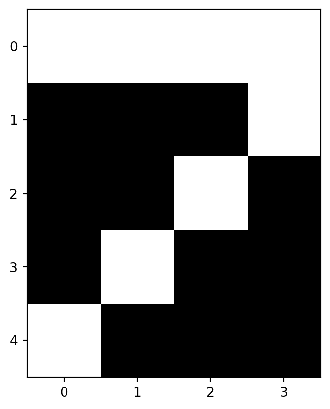
V=np.random.randint(1,255,size=(5,4))
print(I+V)
plt.imshow(I+V,cmap='gray', vmin = 0, vmax = 255,interpolation='none')
plt.show()[[ 42 97 121 176]
[248 5 160 158]
[ 41 70 23 247]
[200 41 214 29]
[ 21 85 59 183]]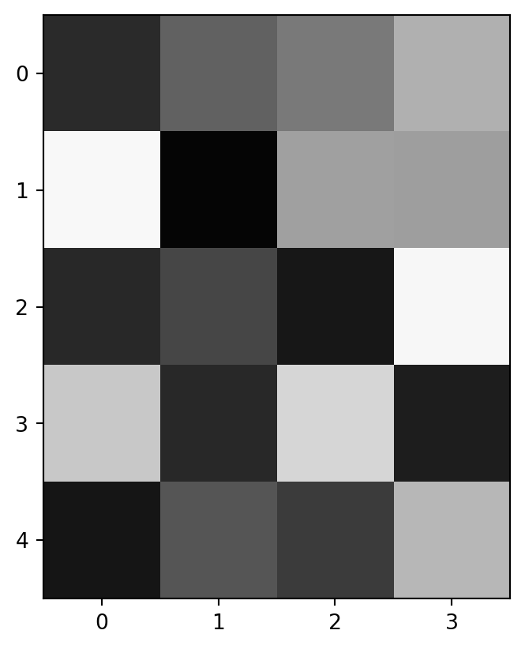
##loading an image and show it using matrices of pixel values
from skimage import io
f = "http://lenna.org/len_top.jpg" #url of the image
a = io.imread(f) # read the image to a tensor
c1=a[:,:,0] # channel 1
c2=a[:,:,1] # channel 2
c3=a[:,:,2] # channel 3
print(c1)[[109 109 108 ... 54 60 67]
[112 111 107 ... 52 55 61]
[111 110 107 ... 51 54 60]
...
[130 129 133 ... 122 119 125]
[128 127 132 ... 125 119 123]
[133 130 127 ... 139 133 140]]import pandas as pd
c1_array=np.array(list(c1)).reshape(-1)
pd.Series(c1_array).hist()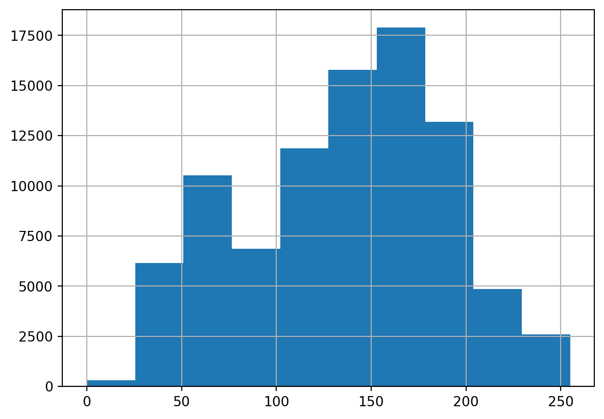
from PIL import Image
import urllib.request
urllib.request.urlretrieve(
'http://lenna.org/len_top.jpg',
"input.jpg")
img = Image.open("input.jpg")imggray = img.convert('LA')
plt.figure(figsize=(8,6))
plt.imshow(imggray);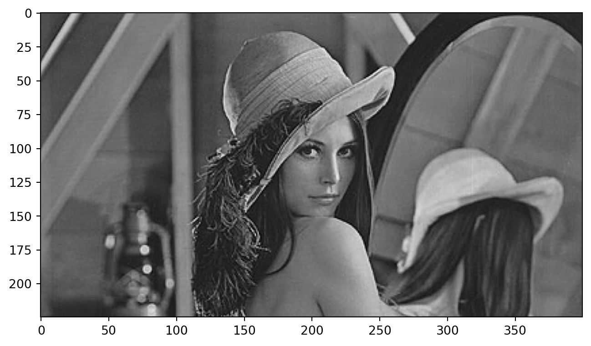
imgmat = np.array(list(imggray.getdata(band=0)), float)
A=pd.Series(imgmat)
A.hist(bins=20)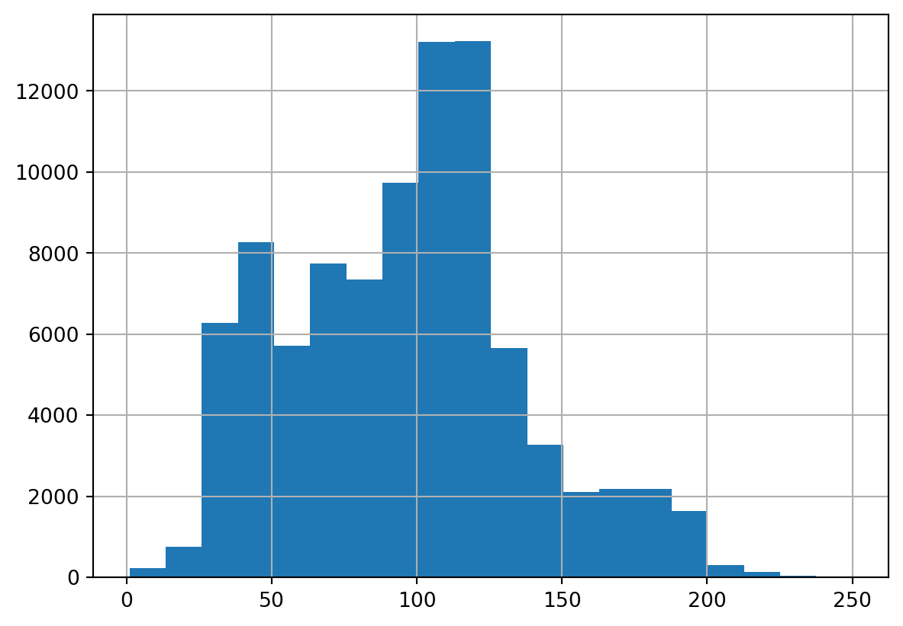
fig = plt.figure(figsize=(12, 3))
ax1 = fig.add_subplot(131)
ax2 = fig.add_subplot(132)
ax3 = fig.add_subplot(133)
ax1.imshow(c1, cmap='gray', vmin = 0, vmax = 255,interpolation='none')
ax2.imshow(c2, cmap='gray', vmin = 0, vmax = 255,interpolation='none')
ax3.imshow(c3, cmap='gray', vmin = 0, vmax = 255,interpolation='none')
plt.show()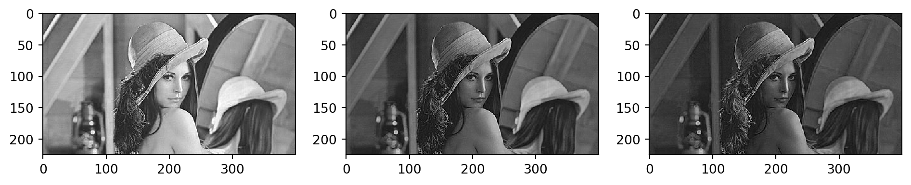
## an application of matrix addition
plt.imshow(0.34*c1+0.2*c2-0.0001*c3, cmap='gray', vmin = 0, vmax = 255,interpolation='none')
plt.show()
## an application of matrix multiplication
plt.imshow(np.dot(c1,c2.T), cmap='gray', vmin = 0, vmax = 255,interpolation='none')
plt.show()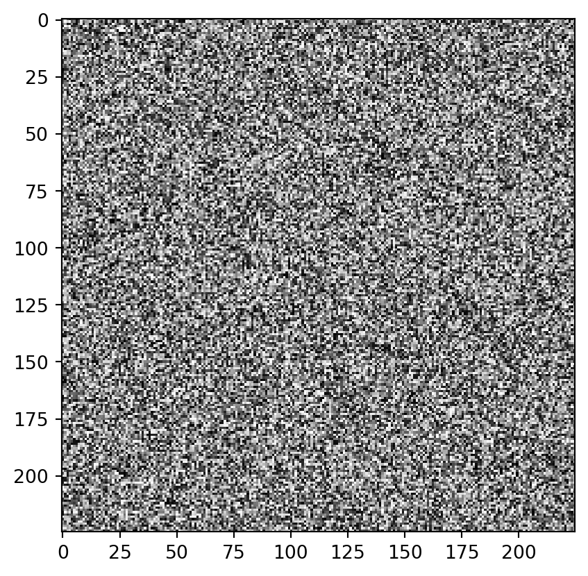
## an application of hadamads multiplication
plt.imshow(c1*c3, cmap='gray', vmin = 0, vmax = 255,interpolation='none')
plt.show()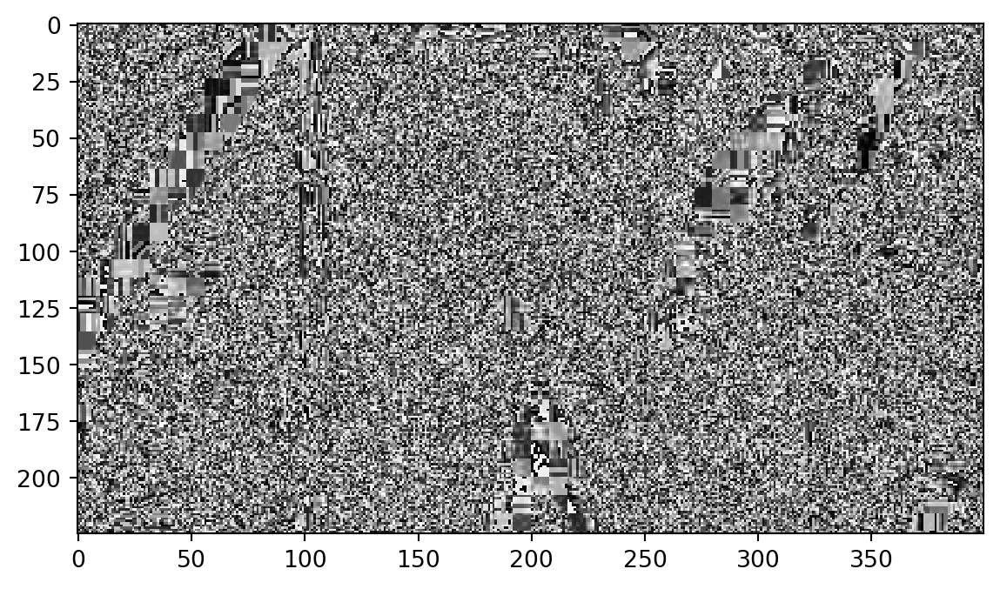
#Pr=np.random.randint(1,3,size=c2.shape)
Pr=np.round(1500*np.random.randn(c2.shape[0],c2.shape[1]))
print(Pr)
plt.imshow(c1*Pr, cmap='gray', vmin = 0, vmax = 255,interpolation='none')
plt.show()[[ 1.012e+03 1.068e+03 8.640e+02 ... 1.000e+00 1.083e+03 -2.489e+03]
[-1.300e+02 -3.080e+02 1.703e+03 ... 1.300e+01 1.191e+03 -1.374e+03]
[-1.377e+03 1.874e+03 -8.890e+02 ... -3.027e+03 2.181e+03 8.080e+02]
...
[-3.280e+02 -5.700e+01 -2.140e+02 ... -1.006e+03 2.817e+03 -2.685e+03]
[ 3.019e+03 -1.127e+03 -2.963e+03 ... 9.280e+02 -2.867e+03 -1.213e+03]
[-7.050e+02 -1.796e+03 -1.075e+03 ... 1.240e+03 1.810e+02 3.230e+02]]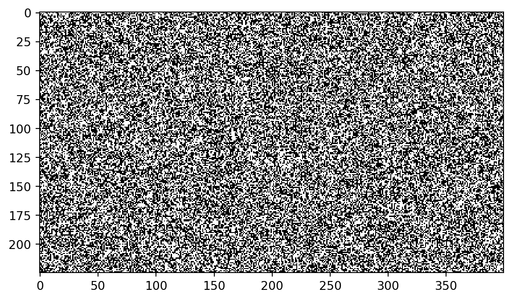
## noising an image using matrix addition
plt.imshow(c1+Pr, cmap='gray', vmin = 0, vmax = 255,interpolation='none')
plt.show()
noised=c1+Pr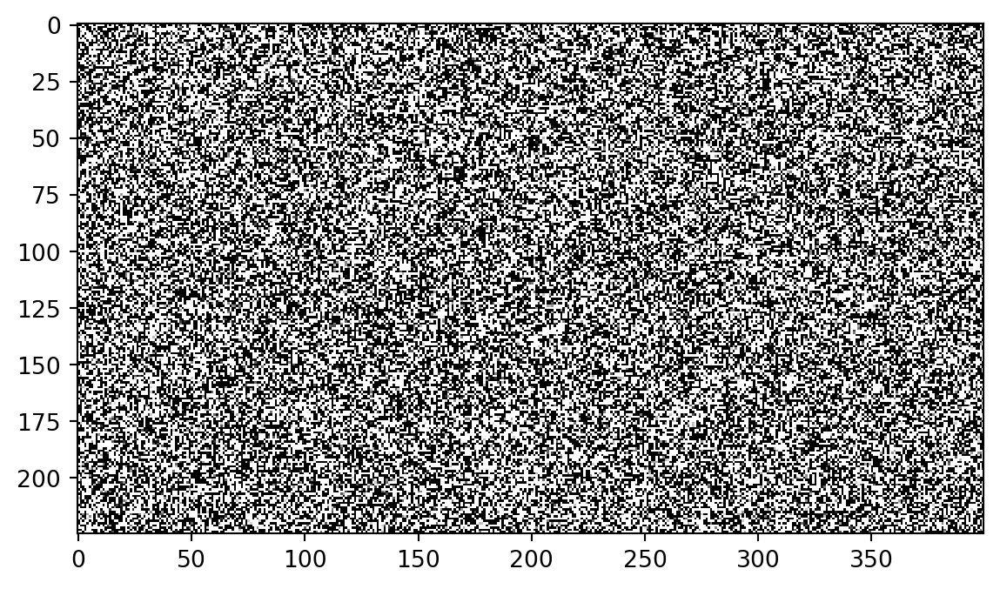
##de-noising an image using matrix operation
plt.imshow(noised-Pr, cmap='gray', vmin = 0, vmax = 255,interpolation='none')
plt.show()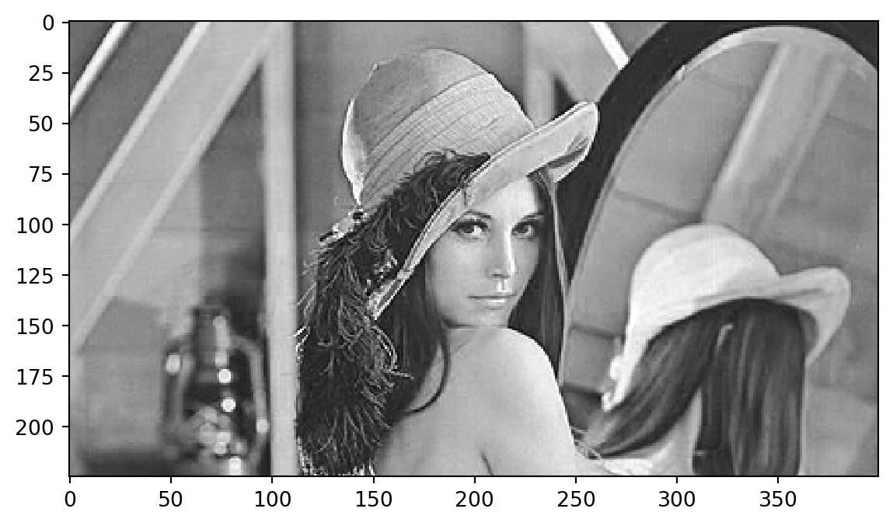
These problems demonstrate how to apply the libraries above to real-world engineering scenarios.
Problem: Store signal samples, reshape them into time frames, and compute signal statistics (Max, Min, Average).
import numpy as np
# Signal samples
signal = np.array([2.1, 2.5, 2.3, 2.8, 3.0, 2.9])
# Reshape into 2D array (2 frames, 3 samples each)
signal_reshaped = signal.reshape(2, 3)
# Signal analysis
print("Reshaped Signal:\n", signal_reshaped)
print("Maximum Signal Value:", np.max(signal_reshaped))
print("Minimum Signal Value:", np.min(signal_reshaped))
print("Average Signal Value:", np.mean(signal_reshaped))Reshaped Signal:
[[2.1 2.5 2.3]
[2.8 3. 2.9]]
Maximum Signal Value: 3.0
Minimum Signal Value: 2.1
Average Signal Value: 2.6Problem: Compute radiation intensity proportional to \(\sin(\theta)\) for specific angles.
# Angles in radians: 0, pi/4, pi/2, pi
theta = np.array([0, np.pi/4, np.pi/2, np.pi])
# Radiation intensity computation
intensity = np.sin(theta)
print("Angles (radians):", theta)
print("Radiation Intensity:", intensity)Angles (radians): [0. 0.78539816 1.57079633 3.14159265]
Radiation Intensity: [0.00000000e+00 7.07106781e-01 1.00000000e+00 1.22464680e-16]Problem: Solve the node voltage equation \(2V - 10 = 0\) symbolically.
import sympy as sp
# Define symbolic variable
V = sp.symbols('V')
# Define and solve equation
equation = 2*V - 10
solution = sp.solve(equation, V)
print("Node Voltage:", solution)Node Voltage: [5]Problem: Visualize the output voltage of a filter against frequency.
import numpy as np
import matplotlib.pyplot as plt
# Data
frequency = np.array([100, 200, 300, 400, 500])
voltage = np.array([1.2, 2.1, 3.0, 2.5, 1.8])
# Plotting the response
plt.plot(frequency, voltage)
plt.xlabel("Frequency (Hz)")
plt.ylabel("Output Voltage (V)")
plt.title("Frequency Response of Filter")
plt.grid(True) # Adding grid for better readability
plt.show()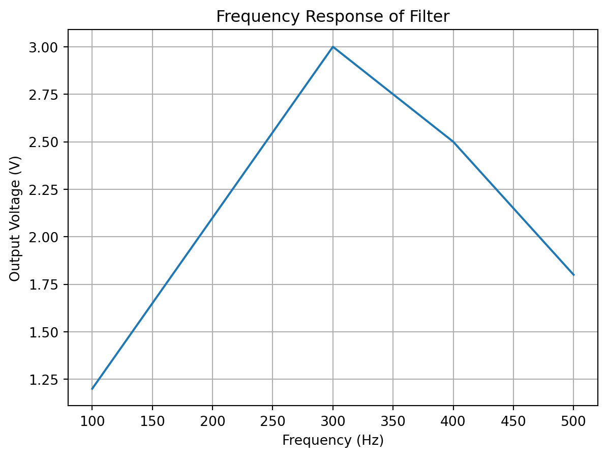
Problem: Analyze the distribution of random noise samples using a histogram.
# Noise samples
noise = np.array([0.2, -0.1, 0.05, 0.3, -0.25, 0.15, 0.1, -0.05])
# Histogram visualization
plt.hist(noise, bins=5, edgecolor='black')
plt.xlabel("Noise Amplitude")
plt.ylabel("Frequency")
plt.title("Noise Distribution in Channel")
plt.show()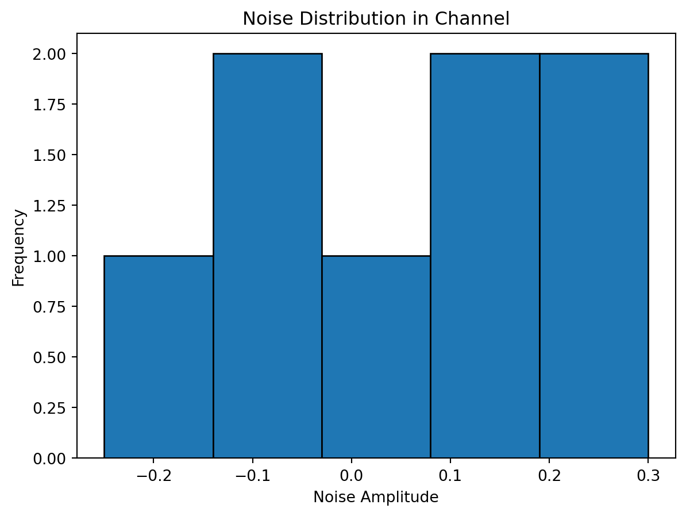